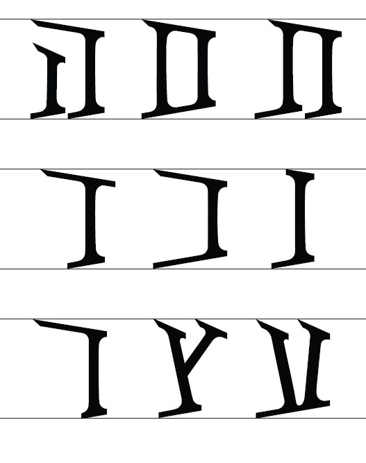
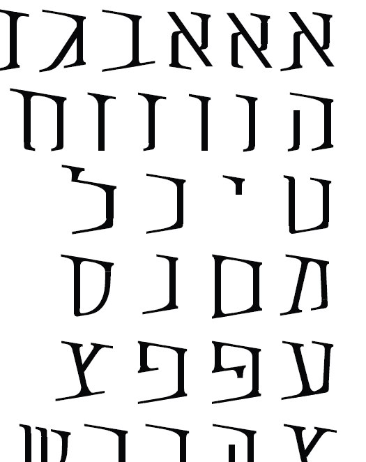
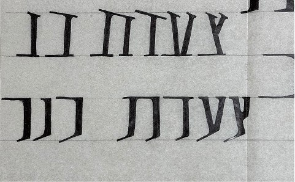
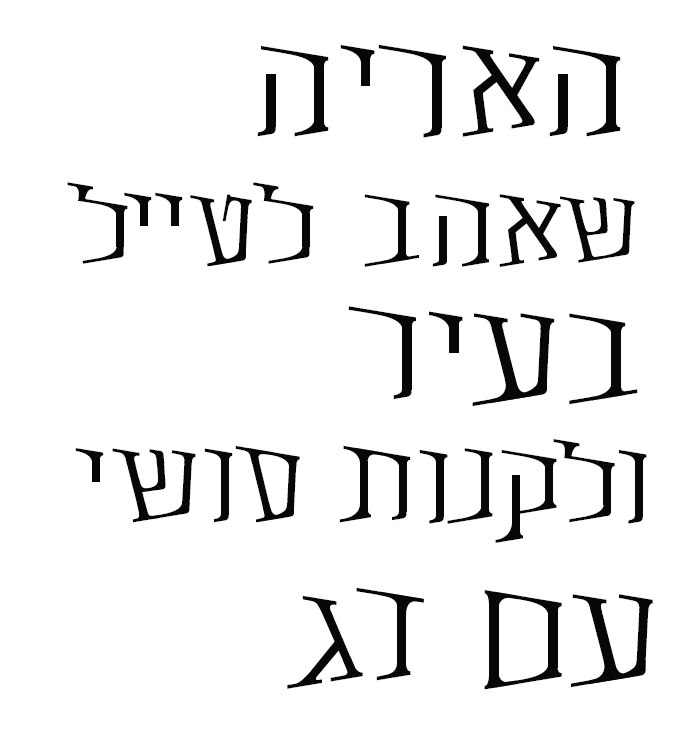
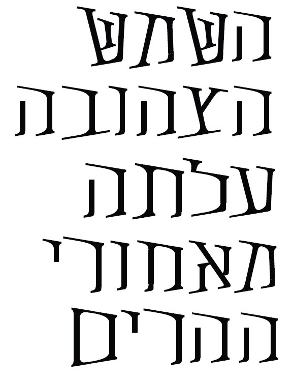

Dracula
Hebrew typeface inspired by old israeli 60s’ poster for headlines

Project Overview
This project was created as part of a type design course. I designed a display typeface inspired by a 1962s poster for the “Kinneret March”.
Throughout the design process, I explored different variations, gradually moving away from the original lettering and developing a distinctive typeface suited for Halloween themed headlines.
- Timeline
- October 2025 - January 2026
- Project Type
- Academic, Type Design
 The original font
The original font







אבגדהוזחטיכלמנסעפצקרשתםןץףך
Dracula 01
Try it yourself
גופן דרקולה